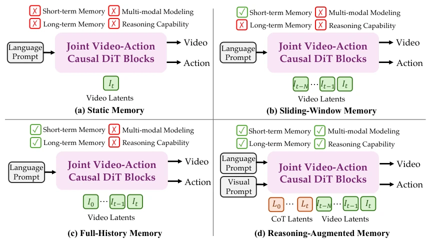
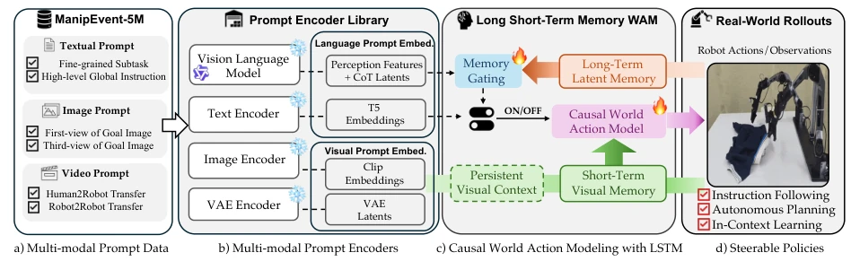
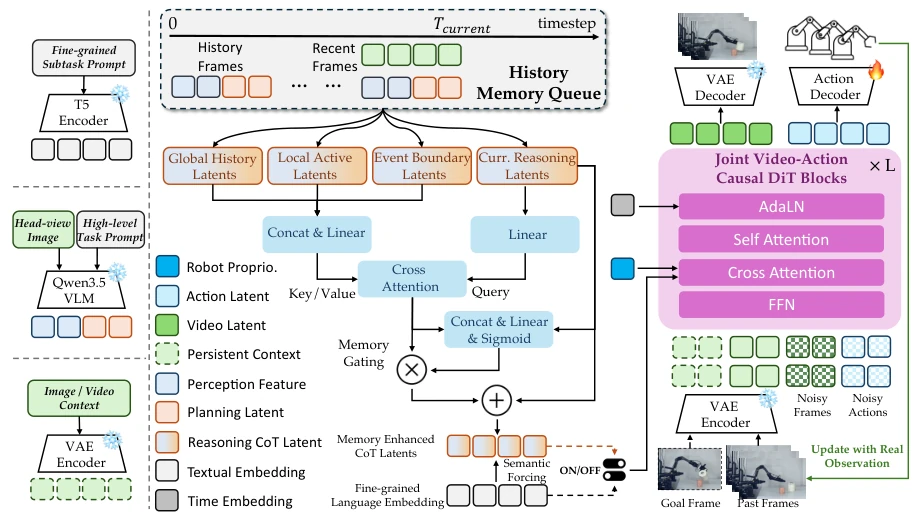
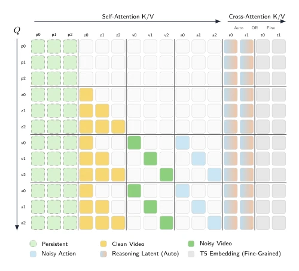
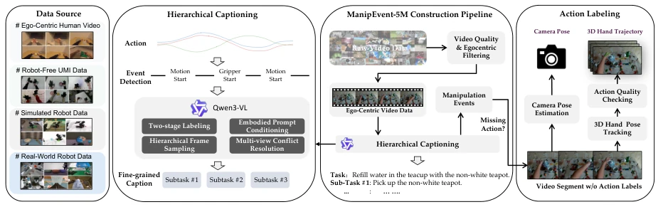
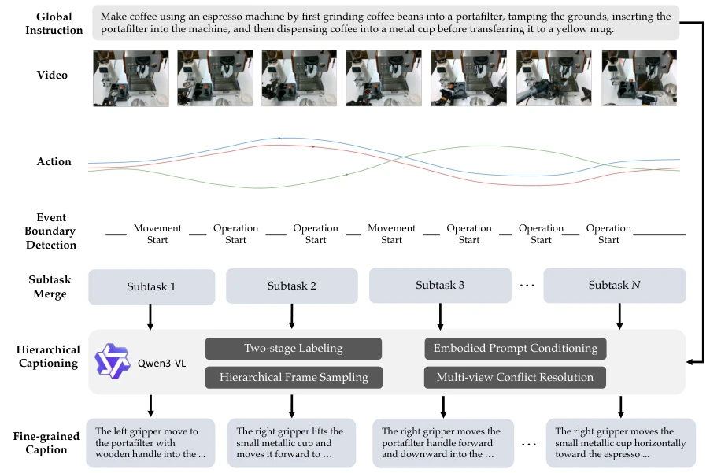
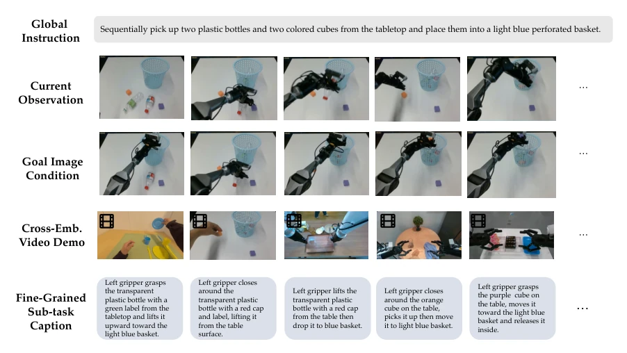
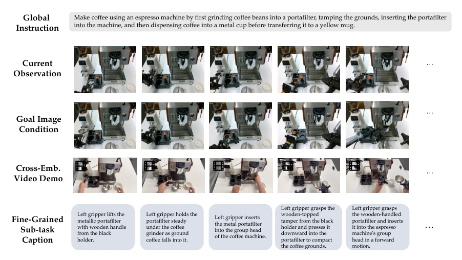
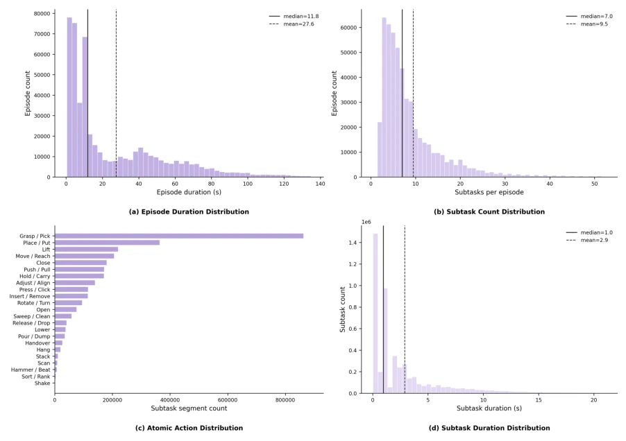
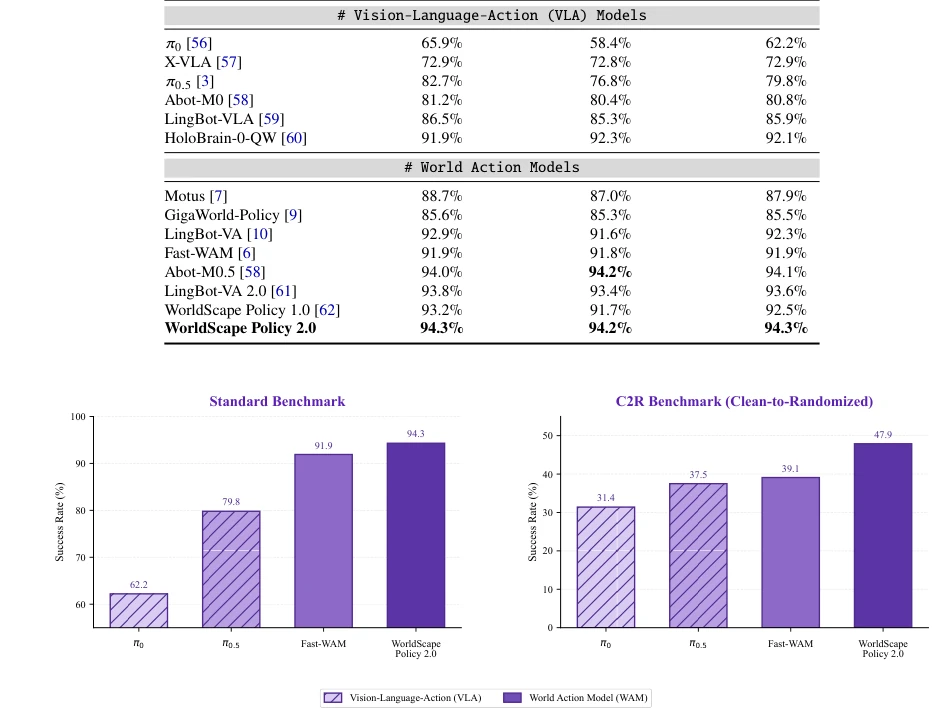

WorldScape Policy 2.0 attempts to equip WAM with a "memory" and "reasoning" brain to solve the forgetting problem in long-horizon tasks. Existing WAMs often suffer from poor memory; when long-horizon tasks become lengthy, they lose context or can only rely on text-based blind guessing. This paper constructs a ManipEvent-5M dataset with 5 million data entries, representing a significant investment. The core combines the reasoning capability of VLM with the visual prediction of DiT to establish a long-short term memory. The benefit is the ability to understand fine-grained instructions, learn actions from images, and even transfer across robots. However, the cost is that inference latency will definitely explode, as VLM must run for planning, raising doubts about real-time performance. Moreover, the data cleaning cost for 5 million entries is not low; can it truly generalize to unseen robots? There is some doubt. However, at least it is better than those "blind" models that only predict the next frame; at least they know what step they are currently on, and implicit subgoal planning is a highlight.
Embodied intelligence is transitioning from specialized policies to general models. WAM provides a dynamics foundation for planning by jointly modeling visual states and actions. However, existing WAMs face three major bottlenecks: first, short-sighted memory, mostly relying only on current or short-term windows [6-11], unable to distinguish different task stages under similar visual conditions; second, coarse supervision, typically only episode-level instructions, lacking fine-grained alignment of atomic actions [12], causing models to rely on visual shortcuts rather than semantic understanding; third, single control, mainly relying on text, making it difficult to utilize target images or demonstration videos for cross-entity transfer. Although MemoryWAM [12] extends historical access, it does not explicitly organize task progress. Although VLA models [3-5] can map language to actions, they lack modeling of visual world evolution. Therefore, how to retain historical semantics, fine-grained grounding, and multimodal control is key to long-horizon controllable policies.

Figure 1: Comparison of different WAM paradigms. Existing models use (a) static observations, (b) short-term visual history, or (c) full-history visual memory without progress-aware reasoning or multimodal control. (d) WorldScape Policy 2.0 introduces multimodal controllability and reasoning-augmented long short-term memory, enabling interactive video-action modeling for long-horizon robotic manipulation.
The overall framework is built upon the ManipEvent-5M dataset to construct a controllable WAM. The core is the "reasoning-enhanced long-short term memory". Long-term memory resides in the VLM branch, compressing historical outputs into three views: global history, local active, and event boundaries, enhancing current reasoning tokens via retrieval to achieve implicit subgoal planning. Short-term memory resides in the Causal DiT branch, directly retaining recent visual latents as prefilling to ensure local interaction dynamics. Training is divided into three stages: first event-level pretraining, then introducing the event memory branch and aligning subgoal semantics through Semantic Forcing, and finally adapting to downstream entities. Action representation adopts delta pose and gripper commands, mapped via adapters specific to entities. Multimodal prompts support text, target images, and video demonstrations, encoded as T5 embeddings or VAE latents and injected into DiT respectively. Memory retrieval employs a gated fusion mechanism, dynamically injecting historical evidence based on token importance.

Figure 2: Overview of the WorldScape Policy 2.0 framework. Built on the event-based ManipEvent-5M pretraining data, WorldScape Policy 2.0 encodes observations together with interchangeable text, goal-image, and video-demonstration prompts into a unified causal video-action modeling pipeline. The model couples short-term visual transitions with long-term reasoning-augmented event memory, enabling implicit subgoal planning and joint video-action prediction. This design supports both autonomous planning from coarse task instructions and controllable manipulation from fine-grained subtask captions or visual prompts.

Figure 3: Illustration of Reasoning-Augmented Long Short-Term Memory. Historical VLM outputs form global-history, local-active, and event-boundary memories, which are retrieved and gated to augment the current reasoning tokens; semantic forcing aligns them with subtask semantics. Recent observations and optional visual prompts enter the DiT as causal visual prefill, while memory-enhanced VLM tokens or T5 embeddings condition joint video-action flow prediction according to the interaction mode.

Figure 4: Attention mask of WorldScape Policy 2.0.

Figure 5: Construction pipeline of ManipEvent-5M. We aggregate heterogeneous manipulation sources, including human-arm ego videos, robot-free UMI data, simulated trajectories, and real-robot demonstrations, and convert them into event-level training samples. Each trajectory is segmented into ordered atomic subgoals and annotated with paired action trajectories, episode-level global instructions, segment-level fine-grained captions, goal-image prompts, and video-context prompts. This event-based multimodal schema supports the event-grounded WAM interface in Fig. 2, enabling fine-grained language grounding, goal-conditioned policy learning, demonstration-conditioned in-context learning, and long-horizon memory-aware mid-training.

Figure 6: Examples of hierarchical captioning in ManipEvent-5M. The pipeline combines two-stage temporal-semantic labeling, hierarchical episode / event frame sampling, embodied prompt conditioning, and multi-view conflict resolution. Representative instances map segmented events to fine-grained captions, complementing the construction pipeline in Fig. 5.

Figure 8: Multimodal prompt example from ManipEvent-5M: desktop cleaning. The sample pairs a global task instruction and current observations with goal-image conditioning, event-level fine-grained subtask captions, and a cross-embodiment video demonstration for placing bottles and colored cubes into a basket.

Figure 9: Multimodal prompt example from ManipEvent-5M: coffee making. The sample illustrates how a multi-stage task is represented by a global instruction, current observations, a goal-image condition, fine-grained subtask captions, and a cross-embodiment video demonstration.
The dataset ManipEvent-5M contains nearly 5 million event segments, covering real robots, simulation, and human videos, providing fine-grained subtask captions and visual prompts. Evaluation is conducted on RoboTwin 2.0 simulation and PiPER dual-arm physical robots. Compared to VLA and WAM baselines, it performs superiorly in long-horizon autonomous planning, fine-grained instruction following, and context adaptation. Ablation studies indicate that event memory and semantic forcing significantly improve long-horizon task success rates. Figure 10 shows that on the C2R benchmark, the WAM method outperforms VLA. The data distribution plot (Fig 7) demonstrates diverse task lengths and action types. Experiments cover clean and randomized settings, verifying generalization capabilities.

Figure 7: Distribution statistics of ManipEvent-5M. The figure shows the detailed distribution of episode duration, subtask count, atomic actions, and subtask duration across diverse sources from real-world / simulated robot data, robot-free data, and ego-centric human data in the constructed ManipEvent-5M dataset.

Figure 10: Comparison on the RoboTwin 2.0 standard and C2R benchmarks. The standard benchmark uses clean-plus- randomized training data, whereas C2R trains policies only on clean demonstrations and reports the average success rate across clean and randomized evaluation settings. Hatched bars denote VLA methods, and solid bars denote WAM methods.